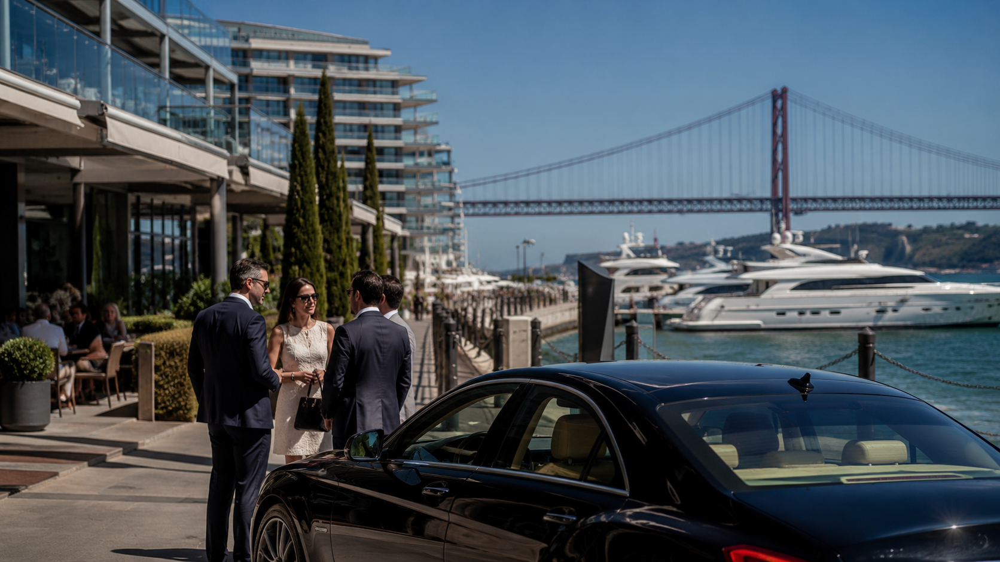

Os dados são do Banco Central Europeu. O inquérito às finanças e consumo das famílias realizado em toda a zona euro, o estudo mais abrangente sobre distribuição patrimonial nos países do bloco, posiciona Portugal entre os casos mais extremos de concentração de riqueza da União. Os 10% mais ricos detêm 60,2% da riqueza nacional. É um número que não precisa de adjetivos.
O que torna o número mais perturbador não é o valor em si, mas a trajetória. Portugal está entre os países da UE onde a concentração patrimonial mais cresceu nas últimas décadas, numa tendência que atravessou crises, ajustamentos e recuperações sem ser invertida de forma sustentada. Enquanto os salários avançavam lentamente e a classe média absorvia o custo das crises financeiras, o capital valorizava a um ritmo superior ao crescimento económico, e quem detinha mais capital acumulava mais riqueza a cada ciclo.
A Comissão Europeia viu estes dados e decidiu agir, pelo menos ao nível das recomendações e do enquadramento político. Nos últimos meses, Bruxelas intensificou a pressão sobre os Estados-membros para reformarem os seus regimes de tributação de fortunas, heranças e mais-valias. O argumento central é direto: as exceções fiscais que protegem os ganhos de capital beneficiam de forma desproporcionada os contribuintes no topo da pirâmide patrimonial, aprofundando a desigualdade em vez de a corrigir.
Para quem gere empresas, estrutura patrimónios ou planeia sucessões em Portugal, o debate que está a tomar forma em Bruxelas tem implicações concretas. A questão não é ideológica. É fiscal, temporal e estratégica.
A acumulação que os dados mostram
A desigualdade patrimonial e a desigualdade de rendimentos são fenómenos relacionados mas distintos. Em Portugal, os indicadores de desigualdade de rendimentos são elevados mas não excecionais no contexto europeu. O que distingue o caso português é a velocidade a que a riqueza acumulada no topo se afastou do resto nas últimas três décadas.
Três mecanismos explicam a trajetória. O primeiro é a valorização assimétrica dos ativos: imóveis de investimento, participações societárias e carteiras financeiras cresceram muito acima dos salários medianos, especialmente após a crise de 2008 e durante o longo ciclo de taxas de juro próximas de zero que se seguiu. Quem tinha ativos acumulou mais riqueza. Quem vivia do rendimento do trabalho acumulou menos, ou viu a sua poupança imobilizada em habitação própria com menor liquidez e menor valorização relativa do que os ativos de investimento.
O segundo mecanismo é estrutural: a tributação do capital em Portugal é consistentemente mais favorável do que a tributação do trabalho. Um trabalhador qualificado com um salário de €80.000 paga uma taxa marginal de IRS de 45%, acrescida de descontos para a segurança social. Um investidor que realiza €80.000 de mais-valias em fundos de ações paga 28%, sem contribuições sociais. A diferença de tratamento fiscal entre rendimento do trabalho e rendimento do capital é das mais acentuadas da UE.
O terceiro mecanismo é a transmissão intergeracional quase sem tributação. Desde 2004, as heranças entre pais e filhos ou entre cônjuges estão isentas de imposto sobre as sucessões em Portugal. O argumento que sustentou a abolição foi proteger as famílias de classe média que transmitiam a casa de morada de família ou uma pequena poupança. A realidade é que o mesmo regime isenta a transmissão de empresas familiares avaliadas em dezenas ou centenas de milhões de euros, participações em holdings, carteiras de ativos imobiliários de rendimento e patrimónios financeiros de qualquer dimensão. Não existe limite de valor. Não existe escala progressiva. A casa de €150.000 e o pacote de ações de €20 milhões são tratados de forma idêntica.
| País | Imposto sobre heranças diretas | Taxa máx. mais-valias mobiliárias |
|---|---|---|
| Portugal | 0% | 28% |
| França | Até 45% (após isenção de €100.000) | 30% |
| Alemanha | Até 30% (isenções para empresa familiar) | 25% |
| Espanha | Até 34% (varia por Comunidade Autónoma) | 28% |
| Reino Unido | 40% (acima de £325.000) | 24% |
| Países Baixos | Até 20% | 34% |
| Bélgica | 0% (Flandres) a 30% (Valónia) | 30% |
A comparação deixa Portugal numa posição singular. É dos poucos países da UE que combina isenção total de imposto sobre heranças diretas com uma taxa de mais-valias abaixo da taxa marginal de rendimentos do trabalho. A combinação cria um regime que favorece estruturalmente a acumulação e a transmissão intergeracional de capital concentrado. Não é um acidente de política fiscal. É o resultado de décadas de opções deliberadas.
O que Bruxelas está a propor
A Comissão Europeia não tem competência para impor regimes de fiscalidade direta aos Estados-membros. A tributação do rendimento e do património continua a ser matéria soberana, sujeita a unanimidade no Conselho da UE. O que Bruxelas pode fazer é recomendar, enquadrar e criar pressão política. Está a fazê-lo com uma intensidade crescente.
O ponto de partida do debate mais recente foi um relatório coordenado pelo economista Gabriel Zucman para a presidência brasileira do G20, em 2024. A proposta central: um imposto mínimo global de 2% sobre o património líquido dos bilionários. O argumento de analogia era explícito: se foi possível criar um imposto mínimo global de 15% sobre os lucros das multinacionais, via acordo OCDE, a mesma lógica de cooperação internacional pode ser aplicada à tributação dos patrimónios muito elevados. A Comissão Europeia acolheu a proposta com interesse declarado e integrou-a no debate sobre equidade fiscal europeia.
Mais próxima da ação concreta é a pressão de Bruxelas sobre as assimetrias na tributação das mais-valias. O argumento técnico é sólido: quando os ganhos de capital são taxados a uma taxa plana inferior à taxa marginal do rendimento do trabalho, o sistema fiscal incentiva estruturalmente a substituição de rendimento por capital. Não é apenas uma questão de equidade distributiva. É uma questão de eficiência económica, porque distorce as decisões de investimento, de remuneração e de estruturação empresarial em direção às formas de rendimento fiscalmente mais favorecidas.
A crítica específica às exceções fiscais nas mais-valias visa os regimes que vários países criaram, aparentemente para fins distintos (atrair capital estrangeiro, simplificar o sistema, incentivar o investimento), mas que acabam por beneficiar de forma concentrada os contribuintes com maior capital disponível para estruturar. Portugal está explicitamente no raio de ação destas recomendações.
O contexto político importa. O debate sobre tributação da riqueza em Portugal não está a acontecer no vazio. Acontece num momento em que os governos europeus enfrentam pressão simultânea para financiar despesas crescentes em defesa, transição energética e sistemas de saúde, enquanto os limites ao aumento da tributação do trabalho e do consumo estão politicamente esgotados. A riqueza acumulada torna-se, neste quadro, uma base fiscal com apelo político óbvio.
O modelo fiscal português no centro da crítica
Portugal tem um regime fiscal para o capital que é, ao mesmo tempo, legítimo e vulnerável. Legítimo porque resulta de escolhas políticas deliberadas, com objetivos que tiveram lógica contextual. Vulnerável porque assenta em assimetrias que a pressão europeia está a colocar em causa de forma crescente.
A abolição do imposto sobre heranças para herdeiros diretos foi decidida em 2004, num contexto de competição fiscal intra-europeia em que vários países estavam a simplificar ou reduzir a tributação das transmissões familiares. A lógica era defensável: simplificar o sistema, reduzir o peso fiscal nas transmissões de pequenos patrimónios familiares e evitar que as heranças de bens imóveis de baixo valor criassem encargos desproporcionados. O problema é que a isenção não tem limite de valor e não prevê qualquer progressividade. O resultado prático é que a transmissão de um apartamento de €200.000 e a transmissão de uma participação de €15 milhões numa holding familiar recebem exatamente o mesmo tratamento fiscal: zero.
Do lado das mais-valias, o regime de 28% foi desenhado como taxa liberatória, permitindo ao contribuinte optar por não agregar ao IRS quando a taxa marginal seria superior. Para a maioria dos investidores, 28% é uma taxa favorável em termos absolutos. Mas quando se considera o ecossistema de instrumentos jurídicos disponíveis, holdings, fundos de investimento imobiliário, estruturas societárias internacionais, veículos de capital de risco, o impacto real sobre os patrimónios de maior dimensão é frequentemente inferior à taxa nominal de 28%. Não por via de evasão fiscal ilegal, mas por via de planeamento fiscal legítimo que é simplesmente inacessível a quem não tem capital suficiente para o justificar.
O Regime Fiscal para Residentes Não Habituais, que durante mais de uma década atraiu reformados europeus e profissionais de alta renda, foi reformulado em 2024 com a criação do incentivo fiscal à investigação científica e inovação, mais restritivo nos critérios de elegibilidade. Mas o sinal institucional que Portugal enviou ao longo de mais de dez anos, de que a tributação do capital e de determinadas categorias de rendimento seria preferencial para residentes com capacidade de escolher onde domiciliar os seus rendimentos, persiste na perceção dos investidores. E persiste também na estrutura dos fluxos patrimoniais que entraram no país durante esse período.
Há um argumento recorrente em defesa do regime atual: a isenção de imposto sobre heranças protege a empresa familiar portuguesa, que transmitida de geração em geração sem encargos fiscais pode manter a sua coesão operacional e evitar situações em que os herdeiros são forçados a vender ativos para pagar impostos. O argumento tem substância para empresas de pequena e média dimensão com ativos essencialmente ilíquidos. Tem muito menos substância para patrimónios de grande escala com ativos diversificados e suficiente liquidez para absorver um imposto moderado.
O que a pressão europeia está a pedir não é a abolição do regime de transmissões familiares de empresas. É a introdução de uma progressividade que distinga a casa de família e a PME local dos grandes patrimónios acumulados. Essa distinção, politicamente difícil mas tecnicamente simples, é o centro do debate que Portugal vai ter de enfrentar nos próximos anos.
O que fazer antes que as regras mudem
A probabilidade de Portugal introduzir alguma forma de tributação sobre heranças diretas de valor elevado nos próximos três a cinco anos aumentou de forma significativa. Não é certo. O calendário político, a resistência das famílias empresariais e a dificuldade técnica de definir o que é "grande" patrimônio são obstáculos reais. Mas o contexto europeu, a pressão da Comissão e a necessidade de receita fiscal adicional num Estado com despesa estrutural crescente compõem um cenário onde a questão deixou de ser se e passou a ser quando e como.
Para empresas e famílias com patrimónios relevantes em Portugal, há três linhas de ação que fazem sentido independentemente de qualquer mudança legislativa concreta.
Rever a estrutura de detenção antes que seja urgente
Muitas empresas familiares portuguesas têm estruturas de capital constituídas há décadas, em contextos regulatórios muito diferentes do atual. Nunca foram revistas de forma sistemática, e frequentemente incluem participações cruzadas, ativos misturados com uso pessoal e patrimonial, e ausência de documentação atualizada sobre o valor real dos ativos. Uma revisão da estrutura de detenção antes de qualquer mudança legislativa tem dois benefícios: permite identificar riscos existentes no regime atual e permite estruturar a detenção de forma que seja robusta em diferentes cenários de tributação futura. Fazer isto depois de uma mudança legislativa é mais caro, mais restrito e frequentemente impossível sem custo fiscal imediato.
Distinguir o que é vulnerável do que é estável
Nem todos os benefícios fiscais do regime atual têm o mesmo grau de vulnerabilidade. A isenção de imposto sobre heranças diretas para patrimónios de grande valor é o alvo mais provável de alteração, precisamente porque é fácil de enquadrar politicamente como equidade sem tocar nas transmissões de classe média. A taxa de 28% sobre mais-valias é mais estável no curto prazo, embora a pressão para a aproximar às taxas marginais de IRS seja real no médio prazo. As estruturas de detenção por via de sociedades e fundos são mais resistentes a alterações rápidas, por razões de complexidade técnica e de competição fiscal europeia. Entender este mapa de vulnerabilidades permite priorizar as decisões de estruturação.
O valor do tempo: agir quando o regime é favorável
O planeamento patrimonial e sucessório feito antes de uma mudança legislativa tem um valor estruturalmente superior ao feito depois. As reorganizações societárias, as doações em vida, a criação de estruturas de detenção eficientes: todas estas operações têm um custo menor e uma maior margem de manobra quando o regime fiscal vigente ainda é o atual. Quando a lei mudar, o espaço de manobra reduz-se de forma significativa, os prazos de grandfathering são frequentemente curtos e as operações de reestruturação ficam sujeitas a maior escrutínio fiscal.
O debate que Bruxelas está a liderar não vai resolver a desigualdade patrimonial portuguesa num ciclo legislativo. As mudanças fiscais desta natureza demoram anos entre a proposta e a implementação efetiva. Mas a direção é clara, o enquadramento europeu está a mudar e Portugal, com um dos regimes mais favoráveis da UE para a transmissão de grandes patrimónios, está claramente no centro da convergência que se aproxima. A janela para agir com os instrumentos atuais ainda está aberta. Por quanto tempo, é a questão que cada gestor de capital deveria estar a colocar.
Comentários, correções ou contrapontos são bem-vindos: geral@opencapital.pt